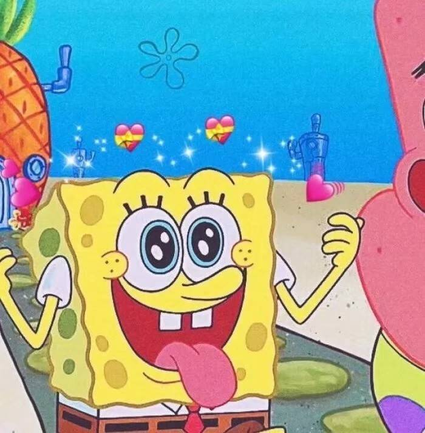
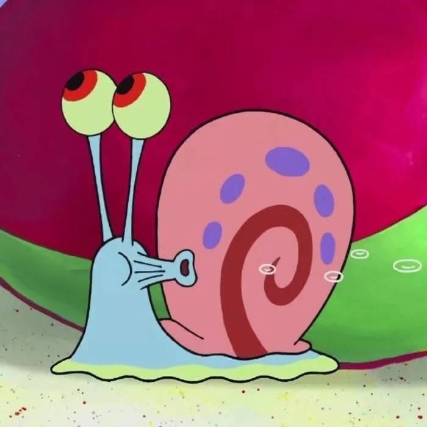
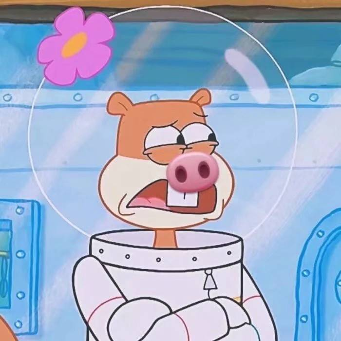

嘟嘟城
“杭州嘟嘟城”（Do都城）少儿社会体验馆是国内首家、场馆规模亚洲最大的少年儿童体验类教育场馆。 在这里，孩子们可以像大人一样，在安全互动的环境中尝试各项工作，体验真实的社会活动，理解通过劳动取得报酬的生存道理，为未来的健康成长和职业发展打下良好的认识基础。 在“杭州嘟嘟城”，孩子们可以尽情选择自己理想中的各种职业：消防员、宇航员、考古学家、记者、医生、机长、设计师、主播、驾驶员、建筑工人……提前在杭州嘟嘟城实现他们未来的梦想！ “杭州嘟嘟城”的建筑、设施、设备是实物大小的70%，完全符合少年儿童活动场所的适用性与安全性的需要。而4-12岁的少年儿童是这个城市的真正主人。 “杭州嘟嘟城”得到了社会各级各类机构的倾力支持！使得“杭州嘟嘟城”这个小社会既是虚拟的也是现实的，孩子们的体验既是仿真的也是专业的。
胡雪岩故居
胡雪岩故居，位于杭州市河坊街、大井巷历史文化保护区东部的元宝街，建于清同治十一年（1872年）胡雪岩事业的颠峰时期， 当时豪宅工程历时3年，于1875年竣工。落成的故居是一座富有中国传统建筑特色又颇具西方建筑风格的美轮美奂的宅第，整个建筑南北长东西宽 ，占地面积10.8亩，建筑面积5815平方米。故居无论是从建筑还是到室内家具的陈设，用料之考究，堪称清末中国巨商第一豪宅。
省听力儿童康复中心
浙江省听力语言康复中心原名浙江省聋儿康复中心,于1996年3月5日正式成立，为浙江省残联下属的全额拨款事业单位 ，全国人工耳蜗项目定点康复机构之一。中心位于浙江省省会杭州市清泰小区内，占地面积1360平方米，建筑面积达到2000平方米。 浙江省聋儿康复中心是省内聋儿康复工作的技术资源中心和业务管理部门。具有“指导、培训、评估”三大职能.